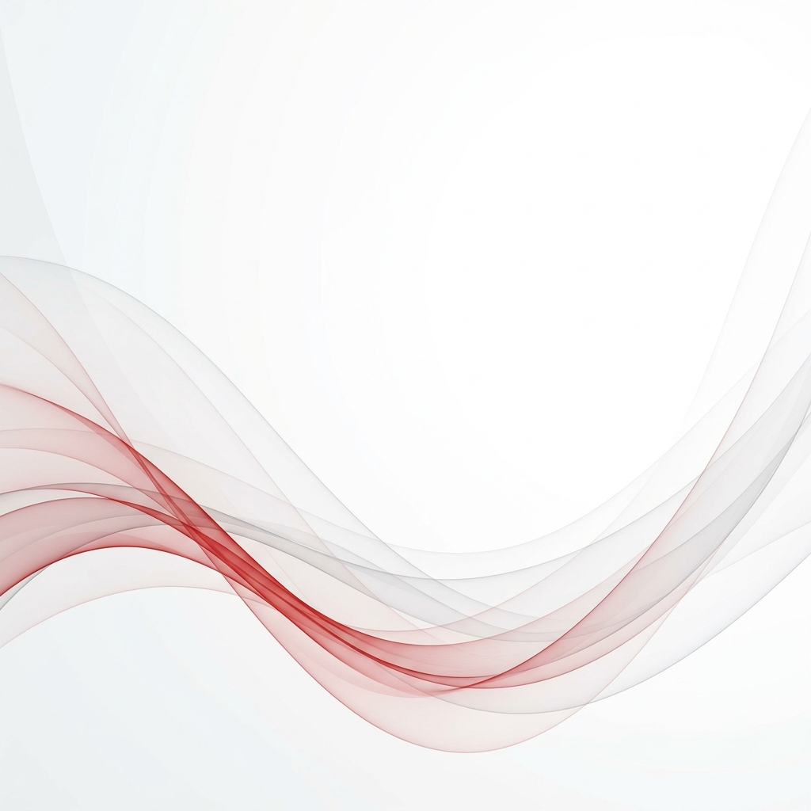
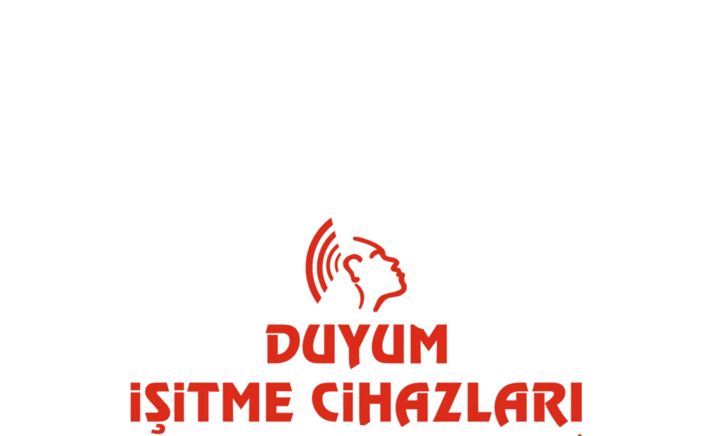
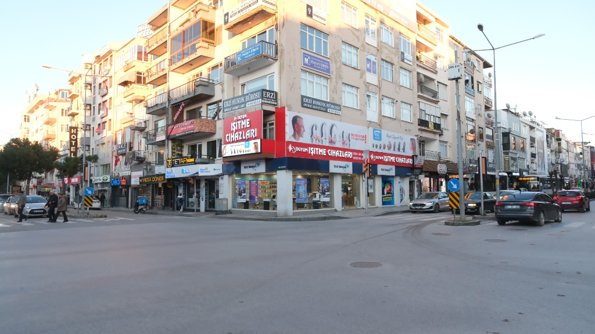

Ses, Özgürce.
İşitme sağlığınızı en ileri teknoloji ve uzman kadromuzla koruyoruz. Duymanın farkını birlikte keşfedin.
Kliniğimizde Ücretsiz İşitme Testi
Dükkanımızda ücretsiz ve kapsamlı işitme testi yapıyoruz! İşitme kaybınızın seviyesini öğrenmek ve size en uygun cihaz seçeneklerini değerlendirmek için merkezimize gelip tamamen ücretsiz testinizi yaptırabilirsiniz.
Hızlı Online Ses Testi
Şu an evde misiniz? Cihazınızın sesini %50 seviyesine getirin ve sessiz bir ortamda başlat tuşuna basarak 4000 Hz'lik ince test sesini duyabildiğinize emin olun.
Sesi Başlat
Hakkımızda
Tarihçemiz
2002 yılında, insanların hayatına yalnızca sesleri değil; sevdiklerinin gülüşünü, bir çocuğun kahkahasını ve hayatın en kıymetli anlarını yeniden kazandırma hayaliyle doğdu Duyum İşitme Cihazları Merkezi.
Bu yolculuk, Harun Balcı’nın aldığı güçlü akademik eğitimi sahaya taşımasıyla başladı. Mesleğe duyduğu tutku ve insanlara faydalı olma isteği, zamanla bir aile emeğine dönüştü. Üç kardeşin aynı inanç etrafında birleşmesiyle, bu merkez sadece bir iş yeri değil; bilgi, tecrübe ve güvenin bir araya geldiği bir yapı halini aldı.
Alanında uzman odyolog ve odyometristlerden oluşan güçlü kadromuzla, her geçen gün büyüyen bir aile olduk. Bugün; Kdz. Ereğli, Zonguldak, Bartın (2 şube), Çaycuma ve son olarak Çanakkale’de açılan şubemizle toplam 6 noktada hizmet veriyor olmanın gururunu yaşıyoruz.
Yıllar içinde gelişen teknolojiye uyum sağlarken, insan odaklı yaklaşımımızdan asla ödün vermedik. Her danışanımızın hikayesini dinledik, her ihtiyaca özel çözümler sunduk. Bugün geldiğimiz noktada, binlerce insanın yeniden duymasına vesile olmanın mutluluğunu taşıyoruz. Ve ilk günkü heyecanımızla, daha çok hayata dokunmaya devam ediyoruz.
Harun Balcı
Kurucu Odyolog

Uzman Kadro & Diplomalar
3 kardeş olarak aldığımız akademik eğitim ve tecrübeyi harmanlayarak, yıllardır profesyonel çözümler sunuyoruz.
Vizyonumuz
Duyum İşitme Cihazları Merkezi olarak vizyonumuz; işitme sağlığı alanında sadece hizmet sunan bir merkez değil, insanların hayatına dokunan, güven veren ve fark yaratan öncü bir marka olmaktır.
Tüm dünyaca bilinen işitme cihazı markalarıyla çalışarak, danışanlarımıza en doğru ve en güncel çözümleri sunarken; aynı zamanda kendi değerlerimizi yansıtan güçlü ve güvenilir bir marka oluşturmayı hedefliyoruz.
Teknoloji ile samimiyeti bir araya getirerek, işitmenin sadece bir ihtiyaç değil, yaşam kalitesinin vazgeçilmez bir parçası olduğunu herkese hissettirmek istiyoruz. Gelecekte, daha fazla insanın sessizliğe mahkûm kalmadığı ve herkesin hayatın seslerine eşit şekilde ulaşabildiği bir dünya hayal ediyoruz.
Rehber
İşitme Sağlığı
İşitme Kaybı Hakkında Bilgi
İşitme kaybı; yaşa, gürültülü ortamlara maruz kalmaya, genetik veya tıbbi nedenlere bağlı olarak gelişebilir. Erken teşhis edilip doğru cihazlarla desteklendiğinde, kişinin yaşam kalitesinde kayda değer bir düşüş yaşanmasının önüne geçilir. Tedavi edilmeyen işitme kayıpları sosyal izolasyona ve bilişsel yetilerde gerilemeye sebep olabilir.
Fiyatı Arttıran / Belirleyen Özellikler
İşitme cihazlarında maliyeti belirleyen en önemli faktörler; yapay zeka destekli ses işleme yeteneği, gürültü baskılama ve yönsel mikrofon algoritmalarının gelişmişliğidir. Ayrıca Bluetooth bağlantısı, şarj edilebilir piller ve kanal sayısının fazlalığı fiyatları artırmaktadır.
İşitme Modelleri Nelerdir?
Kulak Arkası (BTE / RIC)
Her türlü işitme kaybı için uygun, kullanımı kolay, akıllı telefonlara doğrudan bağlanan ve estetik RIC seçenekleriyle sıklıkla tercih edilen modellerdir.
Kulak İçi (CIC / ITE)
Kulak kanalına özel olarak üretilen, dışarıdan minimal şekilde görünen, maske ve gözlük kullanımıyla sorun yaşamayan modellerdir.
Pediatrik Çözümler
Çocukların öğrenme serüvenine destek olan, ekstra dayanıklı, ebeveyn kontrollü ve akıllı uyarı ışıklarına sahip özel cihazlardır.
Yetkili Satıcı
Markalarımız & Cihazlar


Her Frekansta Uzmanlık
On yılı aşkın klinik deneyimimizi en son odyolojik teknolojilerle harmanlayarak size en doğru çözümü sunuyoruz.
Klinik Hassasiyet
Odyologlarımız, 0,1 dB hassasiyetle işitme haritanızı çıkaran profesyonel odyometri ekipmanlarıyla çalışmaktadır.
Yapay Zeka Uyumu
Çevrenizi öğrenen akıllı ses işleme; gürültüyü filtreler, konuşmayı netleştirir. Gittiğiniz her ortamı analiz ederek cihazınızın ayarlarını otomatik optimize eder.
Ömür Boyu Bakım
Cihazınızın ömrü boyunca ücretsiz ayar, temizlik ve yıllık kontrol hizmeti.
Size Özel İşitme Çözümleri
Uzman odyologlarımız tarafından yapılan kapsamlı testler sonucunda, kulak yapınıza ve yaşam tarzınıza en uygun kaliteli cihazı belirliyoruz.
Sesi yeniden keşfetmeye hazır mısınız?
Çanakkale'nin önde gelen işitme merkezi olarak 2000'den fazla hastamıza yardımcı olduk.
No:1/4 Merkez / Çanakkale